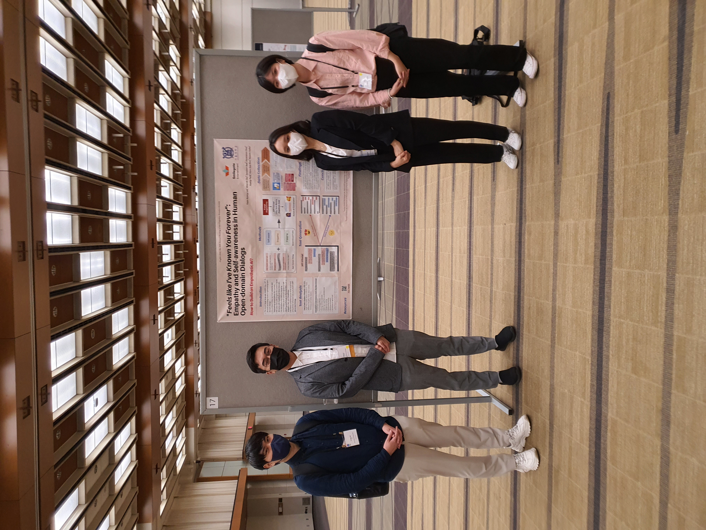
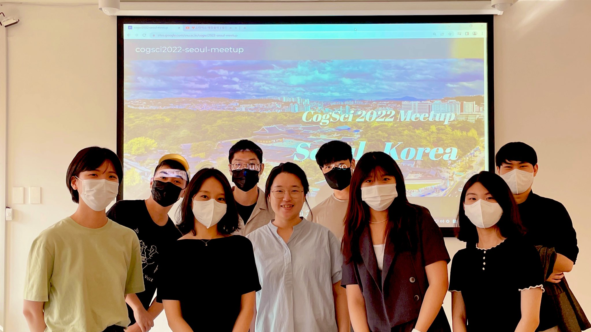
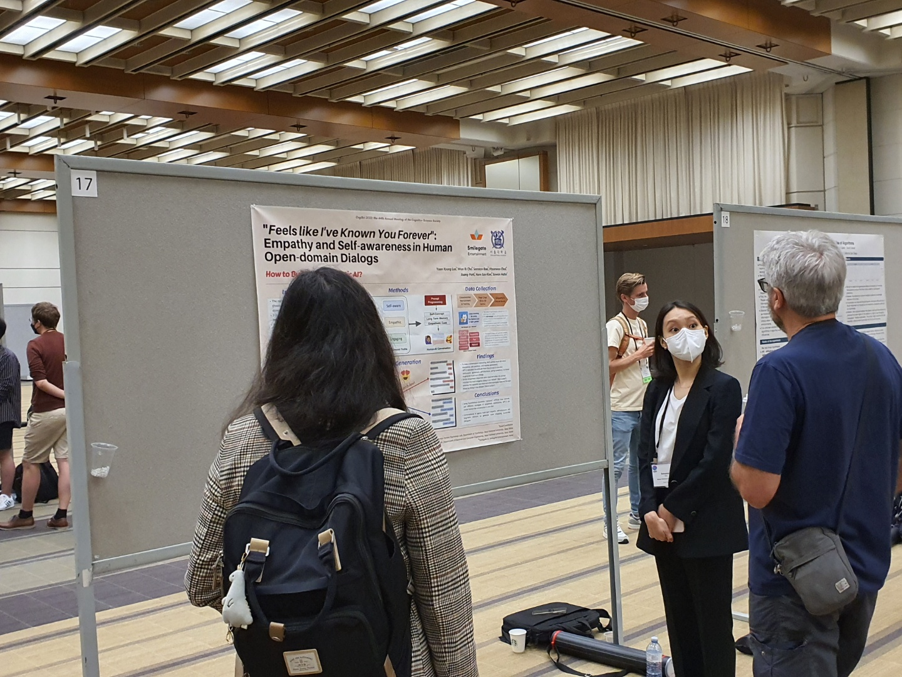
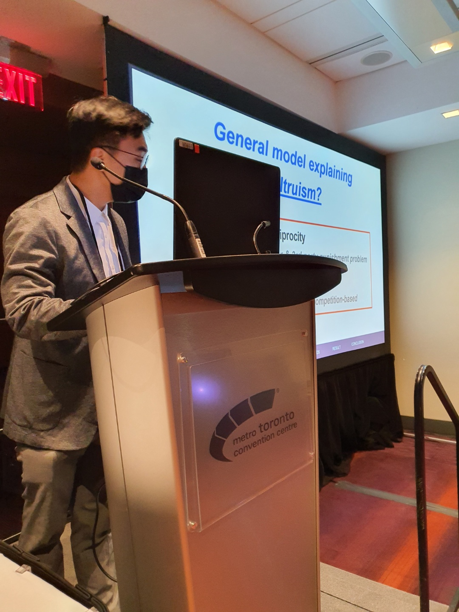

Description :

Lab members participated CogSci 2022 held in Toronto, Canada.
This time, we participated in the conference in hybrid mode. We held a local meet-up in Seoul (MeetupPage)for those who couldn't attend and visited the conference in-person.

Hfpsych lab members (Seoyeon Bae) and Affiliate (Jehun Hong) presented their work in a prestigious cognitive science conference, [Cogsci] (Annual Meeting of Cognitive Science Society) from 27th to 30th, July 2022.
Seoyeon Bae (M.A. student, co-autor) presented "“Feels Like I’ve Known You Forever”: Empathy and Self-Awareness in Human Open-Domain Dialogs" in person on behalf of the authors. (poster).

Jehun Hong (J.D. student) presented “Fishing Free-Riders using Altruism: Zero-Sum Fitness Competition in Prey-Predator System.” (oral talk).

[Research Speech (Youtube)]
CogSci 2022 was held as the form of hybrid conference. The conference took place in Toronto, Canada. The posters and speechs were broadcasted through Underline for online participants.
Our members shared more detailed stories:
"CogSci 2022 was particularly meaningful to me in that it was my first in-person and international conference. Thanks to the paper's first author Yoon Kyung, I had opportunities to give a presentation of our research poster in front of other researchers, which broadened my point of view towards psychology, cognitive science, and related fields (e.g., HCI, AI). Also, listening to speeches of prominent psychologists inspired me to do more influential and contributive research in the future. I hope to participate in further conferences with our lab members!" - Seoyeon Bae
"I gained an interdisciplinary academic experience in the realm of cognitive science, from the evolutionary origins of the human mind to the technical advancement of the Multi-Agent Reinforcement Learning algorithm. Furthermore, the methodological discussion and the feedback to research conclusions with other researchers investigating cooperation and altruism was beneficial to get the direction of potential follow-up studies. I sincerely hope to get a chance to participate in the Cogsci 2023 with our lab members, sharing our new and creative research projects." - Jehun Hong
"Due to the pandemic situation that has been continued for a long time, CogSci 2022 became the first time for me to visit an academic conference physically. It was especially different from virtual conference that I can pyscially feel and experience the conference. From the conference, I could see recent trend and multiple interesting topics of the field, and it became a motivation to continue study" - Inju Lee
"CogSci2022 was the first academic conference I visited. I was impressed by the scale of conference, and at the same time watching many creative studies from all around the world became a valuable time for me to broaden my horizons. From this experience, I could learn and feel that there are a lot of topics that can be discovered and studied. I hoped that I could visit future conference with my own study that can inspire others as I was from CogSci 2022."- Yong-Ha Park